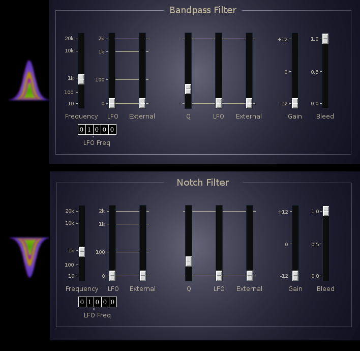

Bandpass and Notch filters
The band pass and notch filter effects are identical except for filter type.
Center frequency and filter Q may be modulated by an internal LFO or by an
external control signal.

- Frequency slider - filter center frequency.
- LFO Freq tumbler - LFO frequency.
- LFO slider, LFO to filter center frequency.
- External slider, external control to filter frequency.
- Q slider.
- LFO slider, LFO to filter Q.
- External slider, external to filter Q.
- Filter output gain.
- Bleed slider, sets how much signal bypasses the filter.
With bleed at 100% the filter is bypassed.
Buses:
- inbus - audio input
- outbus - audio output
- xbus - external control input
- lfoOutbus - internal LFO output
Parameters:
- lfoFreq - LFO frequency (0.0 ... 99.999)
- cFreq - Filter center frequency (0 ... 20k)
- cFreqLfo - LFO to center frequency (0 ... 2k)
- cFreqX - External control to center frequency (0 ... 2k)
- filterGain - (-12 ... +12)
- q - Filter Q factor (0 ... 100)
- qLfo - LFO to filter Q (0 ... 100)
- qX - External control to filter Q (0 ... 100)
- bleed - source signal bypass of filter (0 ... 1)/li>